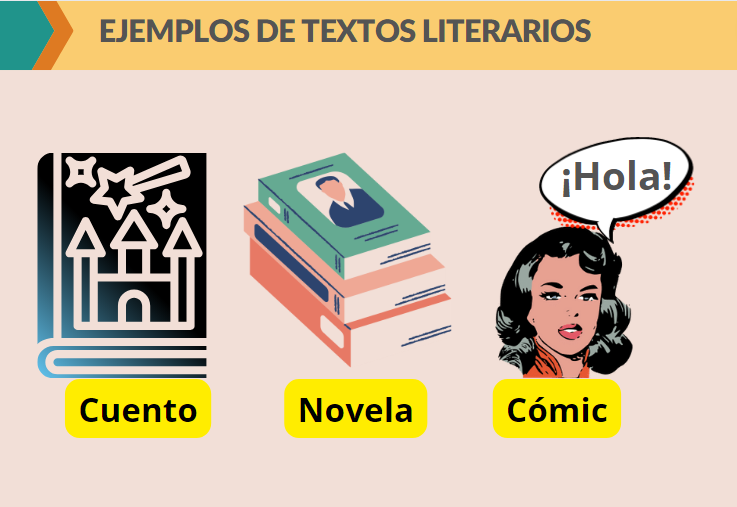
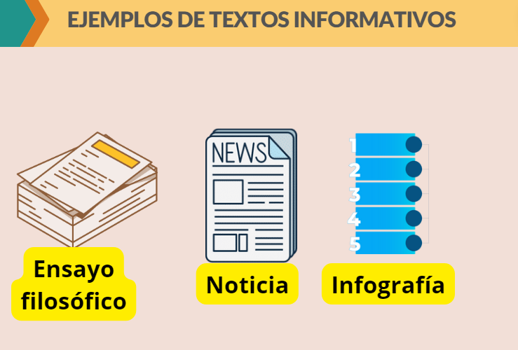
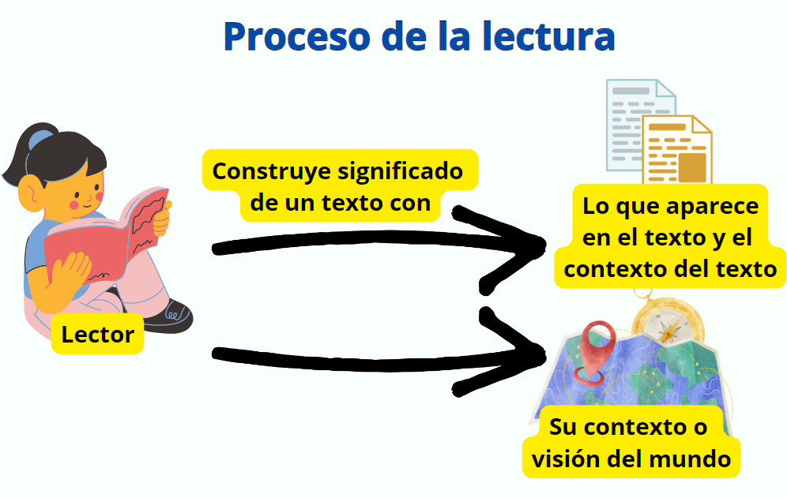

Antes de responder qué es lectura debemos tener presente los términos de texto y contexto. Revisemos.
Texto.
De acuerdo con Gorlee (1997), por texto se puede entender a casi cualquier secuencia de palabras, ya sea desde lo que está escrito (como un cuento, una novela, un haiku, la letra de una canción, entre otros), hasta lo que aparece en formato multimedia (una historieta, una infografía, un cómic, una película).
Pese a lo amplio de la definición anterior, los textos se pueden entender bajo dos grandes clasificaciones según su propósito y estructura, a saber: los textos informativos y los textos literarios.
Los textos literarios tienen como propósito entretener al lector y su estructura se basa, las más de las veces, en relatar o contar hechos reales, imaginarios o ficticios desarrollados en un periodo de tiempo, en un lugar y con personajes determinados (ICFES, 2021).
Jorge Mario Grijalba Ibarra y Cristian Alirio Lasso Ardila mediante Canva.(CC BY-SA)
Por otra parte, los textos informativos tienen como propósito informar al lector, ya sea exponiendo una determinada cuestión, argumentado a favor de una tesis o describiendo objetos, lugares o eventos ICFES (2021).
Jorge Mario Grijalba Ibarra y Cristian Alirio Lasso Ardila mediante Canva.(CC BY-SA)
Ahora bien, aunque sería ideal leer desde muchos textos pertenecientes a las dos clasificaciones nombradas, en este recurso solo abordaremos el cuento (texto literario) y el ensayo filosófico (texto informativo).
Contexto.
Por contexto se entiende tanto al "entorno lingüístico del que depende el sentido de una palabra, frase o fragmento determinados, como al entorno físico o de situación, político, histórico, cultural o de cualquier otra índole, en el que se considera un hecho" (Diccionario de la Real Academia Española-RAE).
En el caso de la lectura, entonces, podemos pensar en el contexto como todo aquello que se relaciona con el texto que nos ayuda a darle sentido al mismo, a aclarar dicho texto. A este respecto podemos mencionar dos clases de contexto: el contexto del texto y el contexto del lector del texto.
El contexto del texto: tiene que ver, tanto con todo aquello que puede aparecer explícitamente en un texto (por ejemplo: palabras, oraciones, párrafos, imágenes, hipervínculos, sonidos, notas aclaratorias, fechas, introducciones, años, títulos, índice, subtítulos, etc.) como también con todo aquello que aunque no aparezca en el texto de forma implícita lo podemos averiguar o inferir (por ejemplo: los objetivos e intereses del escritor, la época en que fue escrito el texto, el tipo de texto que se lee, las estrategias que utiliza el escritor para mostrar sus ideas, ilustrar un asunto o expresar un sentir, etc.)
El contexto del lector: Tiene que ver con todo aquello que ponen en juego el lector al momento de leer (sus conocimientos, vivencias, identidad, recuerdos, emociones e intereses (Canal Encuentro, 2020))
Una vez leídos los anteriores términos, pasamos ahora a definir qué es lectura, término que, cabe aclarar, cuenta con muchas definiciones (véase en: Ramírez (2009) y Santiago y otros (2007)), pero que, para efectos de claridad en este recurso, entenderemos de una sola manera:
Así pues, siguiendo los aportes de Santiago y otros (2007), Solé (2011), Canal Encuentro (2020) e ICFES(2021), se puede definir la lectura como un
Proceso en el que el lector le da un significado a un texto a partir de entender lo que aparece en él (palabras, oraciones, párrafos, imágenes, hipervínculos, audios...) y relacionarlo con el contexto en que fue escrito, así como el contexto propio del lector, en aras de que este último (el lector) logre alcanzar sus objetivos, desarrollar su conocimiento, potenciar sus habilidades personales y participar en la sociedad.
Jorge Mario Grijalba Ibarra y Cristian Alirio Lasso Ardila mediante Canva. Definición de lectura(CC BY-SA)
Ahora bien, bajo el entendimiento que hemos realizado de la lectura conviene puntualizar lo siguiente:
En la definición que construímos entendemos la lectura como un proceso activo, pues en ella se refleja que el lector actúa en la construcción del significado de un texto, teniendo presente tanto lo que aparece en el texto como el contexto del texto y el suyo propio.
Como entendemos que el significado de un texto depende del contexto del lector, no hay un único significado sobre él (sobre el texto), sino que, podríamos afirmar, hay tantos significados sobre un texto como hay lectores de él.
Aunque aquí entendemos la lectura como un proceso activo en el que el lector pone en juego el contexto del texto y el suyo propio para entender su significado y cumplir una serie de propósitos personales en donde la lectura se relaciona más con la idea de aprender; no puede desconocerse que existen otras clases de lectura más superficiales en donde el lector solo busca entretenerse y no ampliar su aprendizaje. No puede desconocerse que hay diferentes niveles de profundidad de la lectura. Sin embargo, como aquí deseamos aprender con la lectura, en este recurso procuraremos alcanzar un nivel profundo de lectura que posibilite nuestro aprendizaje.
Para que la lectura propicie aprendizaje, primero, como expresa Solé (2011) debemos aprender a cómo leer, pues no se aprende a leer en un momento dado y para siempre dado que existen diversas clases de texto y varios niveles de cómo leer que son necesarios aprender para que nos generen aprendizaje, lo que acontinuación vamos a hacer.
{kind=link}
{kind=link}
{kind=link}